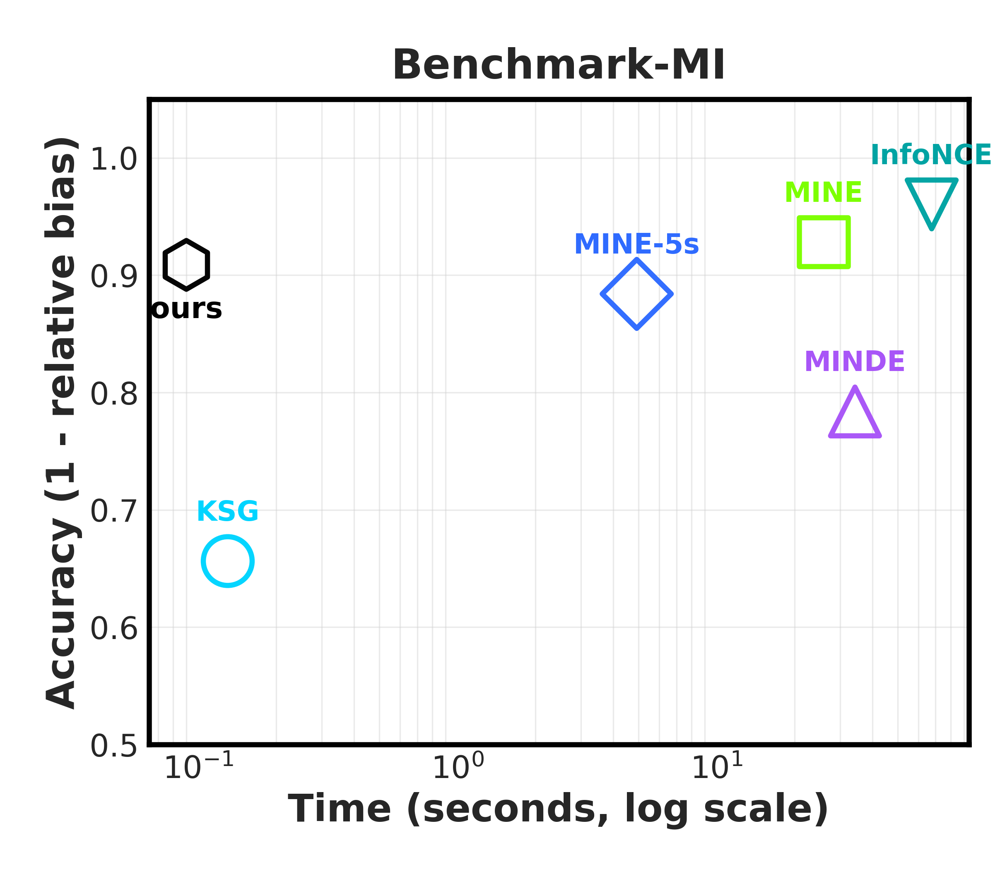

One forward pass. No test-time optimization — MI from samples, directly.
~100× faster, same accuracy. On par with MINE, MINDE, and InfoNCE on standard benchmarks.
One model, many shapes. Any dimension, any sample size. Zero-shot on CLIP, motion, robotics.
Neural mutual information (MI) estimators are accurate but slow: each new dataset triggers its own optimization run. InfoAtlas removes that step. Pretrained once on a large synthetic atlas of dependence structures, it infers MI in a single forward pass — matching state-of-the-art accuracy at ~100× the speed, on inputs of varying dimension and sample size, with strong zero-shot transfer to real data.
A dual-path attentive hypernetwork, pretrained on a synthetic atlas of dependence structures.

Given samples from an unknown joint distribution, InfoAtlas emits the parameters of a near-optimal Donsker–Varadhan critic in one shot and plugs them into the dual-form MI estimator.
A joint path attends over paired samples (x, y) to
capture co-variation. A marginal path shuffles the pairing to
model what independence would look like. The two are fused by
cross-attention; a small MLP then decodes the critic weights.
Inputs of any dimension are padded to a fixed size with independent Gaussian noise — a transformation that provably preserves MI. Attention handles varying sample sizes natively.
We pretrain on mixtures of up to 60 Gaussian and Student-t copulas (linear, nonlinear, heavy-tailed), composed with random normalizing flows that reshape marginals while preserving MI. A low-rank covariance design forces strong cross-dimensional structure. For larger dimensions, k-sliced MI extrapolates beyond the trained range.
The shift: prior neural estimators optimize a critic per dataset. InfoAtlas infers it — minutes become milliseconds.
MI underpins independence testing, representation learning, information bottlenecks, feature selection, and policy design. What has held it back is operational: every neural query is a small training run.
InfoAtlas amortizes that run once, over the synthetic atlas. At test time it behaves like a calculator — samples in, MI out — and stays differentiable, so the same checkpoint drops into end-to-end pipelines as a layer.
Synthetic benchmarks, high-D embeddings, motion, and robotics — one checkpoint, no fine-tuning.

| Setting | Result | Baselines |
|---|---|---|
| BMI benchmark | SOTA-comparable accuracy at ~0.09 s/eval (~300× faster). | MINE, MINDE, InfoNCE, KNIFE, KSG, KDE, InfoNet |
| Independence testing (16 / 64 / 128-D) | Matches or beats neural baselines at moderate–large n. | MINE, InfoNCE, MINDE, InfoNet |
| CLIP image–text (33k COCO, 512-D) | Cleaner noise-band separation; 5-sliced MI beats InfoNet’s 1-sliced. | MINE, MINDE, InfoNet |
| Trajectory segmentation (PointOdyssey) | Same-object grouping by trajectory MI — seconds, not hours. | MINE, InfoNet |
| Robotic key-state discovery (ManiSkill 2) | Best on Pick Cube (94.2 / 82.0), Stack Cube (68.2), Peg Insertion (72.4). | Task-specific baselines, InfoNet |
@inproceedings{hu2026infoatlas,
title = {A Foundation-style Model for Zero-Shot Statistical Dependency Measurement},
author = {Hu, Zhengyang and Chen, Yanzhi and Ren, Hanxiang and Zeng, Qunsong
and Zheng, Youyi and Weller, Adrian and Huang, Kaibin and Yang, Yanchao},
booktitle = {Proceedings of the 43rd International Conference on Machine Learning (ICML)},
year = {2026},
note = {Equal contribution: Zhengyang Hu and Yanzhi Chen.}
}